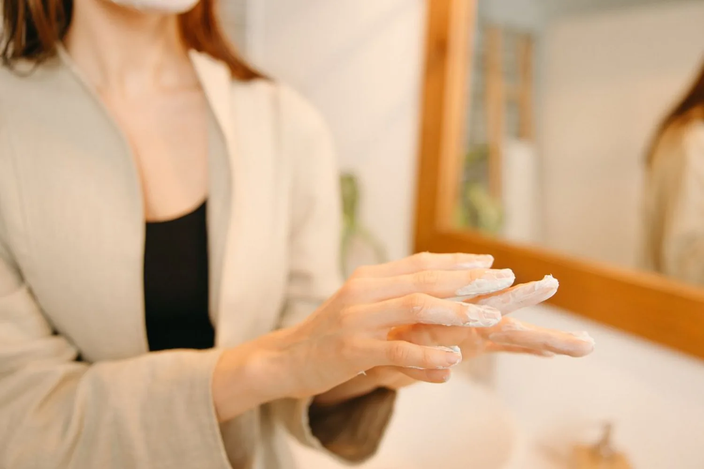

Dieta y lipedema: por qué la alimentación sola no basta
Si tienes lipedema y sientes que ninguna dieta cambia el tamaño de tus piernas, tranquila: no es que estés haciendo algo mal. Te contamos, con evidencia actual, por qué pasa esto y qué sí puede ayudarte de verdad.

Si has probado dieta tras dieta y tus piernas o brazos no cambian de tamaño, seguramente te has sentido frustrada, o te han hecho sentir que "no te esfuerzas lo suficiente". La relación entre dieta y lipedema es distinta a lo que la mayoría espera: la alimentación es una herramienta valiosa, pero no es la solución completa. Entender por qué te pasa esto te ayuda a dejar de culparte y a enfocar tu energía en lo que sí funciona.
Dieta y lipedema: ¿por qué la alimentación no hace desaparecer el tejido?
En la obesidad común, cuando comes menos calorías de las que gastas, el cuerpo suele usar sus reservas de grasa como energía y el tejido adiposo se reduce de forma más o menos uniforme. En el lipedema, el tejido graso afectado se comporta distinto: parece resistente a la dieta y al ejercicio, incluso cuando la persona baja de peso en otras zonas del cuerpo. Es decir, puedes perder volumen en el abdomen o el rostro y ver que las piernas —donde suele concentrarse el lipedema— casi no cambian.
Esto coincide con lo que reportan muchas pacientes: en una encuesta a más de 700 mujeres con lipedema, más de la mitad no notó mejoría en sus síntomas solo con dieta o ejercicio. La explicación más aceptada hoy es que el tejido del lipedema tiene características celulares distintas a la grasa "normal", con procesos de inflamación e irrigación propios, lo que lo hace mucho más difícil de movilizar solo con déficit calórico.
Entonces, ¿para qué sirve la alimentación si tienes lipedema?
Que la dieta no borre el lipedema no significa que no importe: la alimentación cumple un papel real en tu manejo diario, sobre todo en tres frentes:
- Controlar el peso corporal total. Mantener un peso saludable en el resto del cuerpo evita que se sume una obesidad adicional a un cuadro que ya es exigente para tus piernas, tus articulaciones y tu movilidad.
- Reducir la inflamación. El lipedema suele acompañarse de inflamación en el tejido graso. Patrones de alimentación de tipo antiinflamatorio —ricos en verduras, frutas, pescado, aceite de oliva y frutos secos, con menos ultraprocesados, azúcar refinada y sal en exceso— se han asociado con menos dolor y mejor calidad de vida en algunas mujeres con lipedema.
- Evitar que los síntomas empeoren. Los picos de azúcar en la sangre y la retención de líquidos pueden intensificar la sensación de pesadez, hinchazón y dolor. Cuidar esto no cambia el tejido, pero sí puede hacer que tus piernas se sientan mejor en el día a día.
No existe una "dieta del lipedema" única ni mágica. Lo prudente es trabajar tu alimentación con acompañamiento profesional, evitando dietas extremas o restrictivas que no están pensadas para tu caso particular.
Los otros pilares que sí marcan la diferencia
El manejo del lipedema funciona mejor cuando combina varios frentes al mismo tiempo. Estos son los que más respaldo tienen hoy:
Compresión
Las prendas de compresión, especialmente las de tejido plano, ayudan a sostener el tejido, mejorar la sensación de pesadez y favorecer el retorno de líquidos. Suelen recomendarse de forma continua, según cada caso.
Movimiento de bajo impacto
Actividades como caminar, nadar, montar bicicleta o hacer ejercicio en agua ayudan a activar la circulación y el sistema linfático, sin sobrecargar articulaciones ya sensibles por el volumen del tejido. No buscan "quemar" la grasa del lipedema, sino mejorar la movilidad y el bienestar general.
Drenaje linfático y terapia descongestiva
El drenaje linfático manual, junto con vendajes o compresión y cuidado de la piel, puede ayudar a reducir la sensación de hinchazón y mejorar la textura del tejido en muchos casos, sobre todo cuando hay componente linfático asociado.
Manejo multidisciplinario y, en casos avanzados, cirugía
El acompañamiento ideal combina a más de un profesional: valoración vascular, nutrición, fisioterapia y, si aplica, psicología, porque el lipedema también pesa emocionalmente. En Seravena el foco está puesto en ese manejo conservador, sin cirugía. Para los casos muy avanzados en los que las medidas conservadoras no son suficientes, algunos comités de expertos consideran la liposucción especializada para lipedema como una opción adicional. Es una decisión que se evalúa después de haber intentado el manejo conservador, y siempre en manos de un equipo con experiencia específica en esta condición.
Si quieres entender mejor qué es el lipedema y cómo se aborda de forma integral, puedes leer más en nuestra página sobre lipedema, donde explicamos el enfoque completo que usamos en Seravena.
¿Cuándo vale la pena consultar?
Si notas que tus piernas o brazos aumentan de volumen de forma desproporcionada al resto del cuerpo, que duelen al tacto o se hinchan, o que ninguna dieta cambia nada en esas zonas, vale la pena pedir una valoración especializada. Un diagnóstico a tiempo te permite construir un plan de manejo realista, sin culpas ni promesas vacías. En Seravena puedes agendar una valoración y resolver tus dudas con acompañamiento profesional.